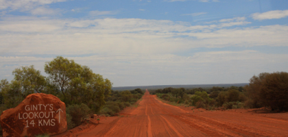

Fra Alice springs til Kings canyon

Hvor er de andre ???
mandag den 10. december 2007

Vi vågner overraskende nok op til den køligste dag vi endnu har haft i Australien. Der blæser en frisk vind, og det føles næsten som en god dansk sommerdag. Da det senere begynder at regne, er ligheden slående.
Vi spiser morgenmad og henter vores lækre Nissan Petrol hos udlejeren, provianterer og kører på eventyr. Vi har tænkt os tage “The Mereenie Loop”. En 200 km grusvej gennem øde aboriginal land. Vi har spurgt os lidt frem i byen, men de fleste mener ikke at det er en god idé. Nå, men vi jo taget på eventyr, og vi har GPS navigator med, så helt galt kan det vel ikke gå.
Vi køber vores tilladelse til at køre turen, og sætter i gang. Først på 137 km asfalt. Alt, hvad vi møder er nogle ørne og et par udbrændte biler. Det regner ret kraftigt, og vi bliver lidt nervøse for køreturen. Nu er der jo ingen af os, der er super off road hajer, og da vi vil vil ringe til hotellet, for at fortælle at vi er på vej, er der selvfølgelig slet ingen mobildækning - nej vi er sandeligt langt væk hjemmefra. Vi kommer til en benzinstation, et meget øde sted, der hedder Hermannsburg, og det er sidste gang vi ser et hus, før vi er fremme. De siger at turen burde være ok, så vi tager chancen.
Grusvejen viser sig at være en dejlig bred, næsten lige vej, og da der ikke er andre trafikanter, kan vi ligge og lege med en god fart. Det er fantastisk, hvilken luksus, at være helt alene i så smuk natur. Sjovt nok føler vi os hjemme. Det minder lidt om Anholts ørken eller Skagen, og regnen får de flotteste farver frem i ørkenen. Med nogle gode store vandpytter, der griser vores fine bil godt til over det hele, æsler på vejen og et par pauser undervejs, får vi faktisk kørt vejen med ca. 80 i snit, og vi ankommer til hotellet kl. 15.
Vi checker ind, tager en lille dukkert, og kører mod selve naturparken, for at kigge på den 6 km lange vandretur, langs bjergkarmen kaldet Kings Canyon Rim Walk. Igen får vi at vide af alle vi spørger, at turen bestemt ikke er egnet for børn, men beslutter os for at teste om vi mon kan klare den stejle opstigning i starten, som skulle være noget af det hårdeste ved turen. Kan vi klare det med Stella i bærerygsækken, kan vi nok også klare hele turen, hvis vejret eller er nogenlunde ok.
Viola springer frisk op af trinene til toppen og der åbenbarer sig et fantastisk syn for os da vi når helt op. Igen er vi helt helt alene. Kl. er næsten seks om aftenen og vi kan bare stå og lytte til vinden, mens vi kigger ud over den storslåede natur. På med fluenettene, ned igen og hjem til aftensmad. Et varmt karbad med udsigt til ørkenen, tidligt i seng. I morgen hedder programmet helt sikkert 6 km vandring og bagefter 400 km kørsel til Ayers Rock.
Godnat !
The road to nowhere.
Vi er rimelig alene mens vi kører gennem the Outback. 200 km rød grusvej hvor vi møder 3 andre biler. nogle vilde æsler, heste og kameler ...